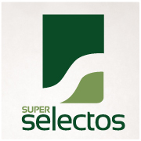
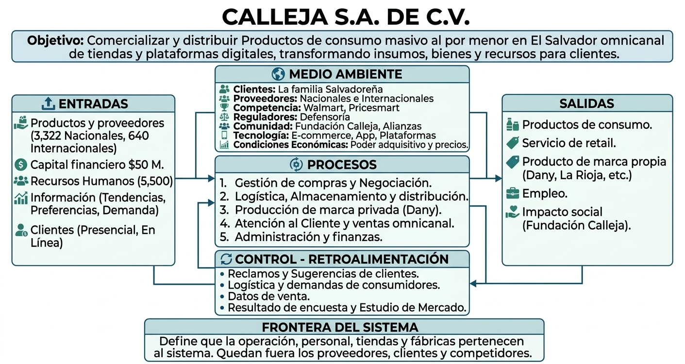
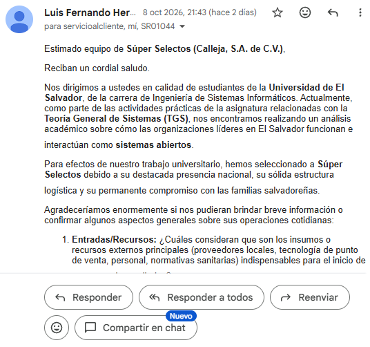
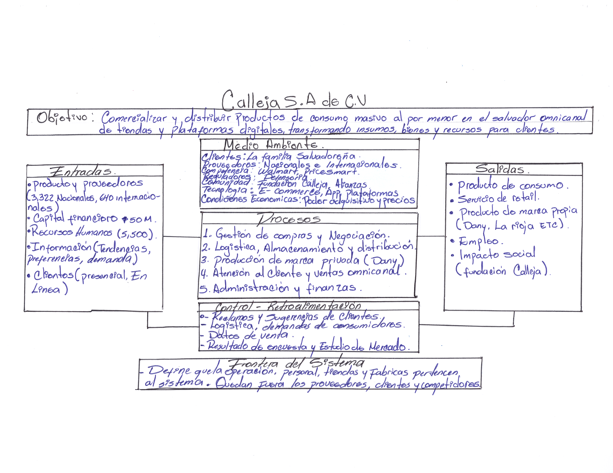

Teoria de sistemas (Plan 2026)
La organización como sistema abierto
Análisis de la empresa Súper Selectos S.A. de C.V.
como un sistema abierto en El Salvador.
Teoria de sistemas (Plan 2026)
Análisis de la empresa Súper Selectos S.A. de C.V.
como un sistema abierto en El Salvador.
Asignatura: Teoría de Sistemas (Plan 2026)
Fecha:16 de octubre de 2026

Super Selectos S.A. de C.V. es una cadena de superercados Salvadeña, fundada en 1975. Se deica a la comercializacion de productos de consumo diario, alimentos, bebidas, articulos para el hogar y cuidado personal.
Cuenta con varias sucursales en todo el pais, prinipalmente en San Salvador y otras zonas. Sus clientes son familias, hogares negocios y empresas que buscan calidad, variedad y buen servicio.
Super Selectos recibe recursos del entorno, como productos de sus proveedores, clientes, personal, tecnologia y capital. A traves de sus procesos de compra, almacenamiento, exhibicion, venta y atencion al cliente, transforma esos recursos en productos y servicios que entrega a sus consumidores. Además genera informacion útil, como reportes de ventas y satisfaccion del cliente, que le permite tomar decisiones y mejorar continuamente.
Su entorno está compuesto por proveedores,clientes, comptencia, gobierno, codiciones económicas, tecnologia y la comunidad. Mantiene una reacion constante con todos ellos, ya que cualquier cambio en el entorno influye en sus operaciones./p>
Para garantizar su mejora, utiliza la retroalimentación de sus clientes, colaboradores y proveedores, lo que le permite corregir errores y fortaecer sus procesos.


Correo de contacto con la empresa

Fotografia del diagrama elaborado a mano
La empresa funciona como un sistema abierto porque constantemente intercambia recursos, informacion y productos con su entorno. Sus entradas se transforman en procesos internos y generan salidas que satisfacen a sus clientes y le permiten mantenerse en el mercado. La retroalimentación de los clientes y del entorno permite ajustar sus procesos y mejorar la calidad del servicio
Si alguno de estos elementos falla (por ejemplo la falta de productos, problemas en la cadena de suministros o cambios en la economia), se afecta todo el sistema. POr eso es importante que la empresa tenga una buena relacion con su entorno y gestione adecuadamente sus recursos.